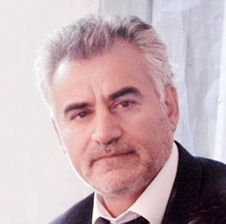
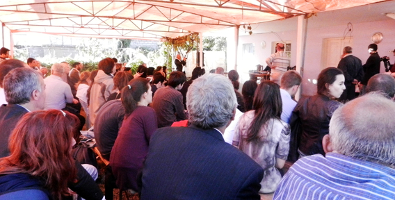
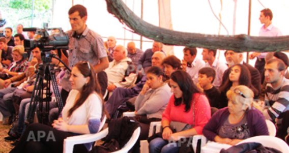
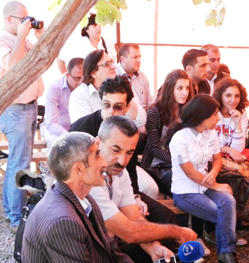

ЮЖНЫЙ КАВКАЗ. РЕАЛЬНЫЕ УГРОЗЫ
В последние дни в общественно-политической жизни Азербайджана велись широкие обсуждения по поводу открытия границ между Турцией и Арменией. К сожалению, как и в обсуждении предыдущих вопросов, в этом вопросе не было отведено места инакомыслию. Открытие границ между двумя соседними странами является важным событием с точки зрения региональной безопасности, поэтому обсуждение различных мнений могло бы иметь важное значение. Обсуждение вопросов безопасности на Южном Кавказе с политиками, имеющими одну платформу, или же с политологами с одинаковым стилем подхода лишает общественное сознание возможности идеологического выбора. Вопросы, имеющие общественно-политическую важность, в том числе вопросы, связанные с региональной безопасностью, должны выйти за рамки обсуждений группы популярных политологов и вынесены на обсуждение широкой общественности.

За последние 15 лет все исследования, связанные с региональной безопасностью, велись в контексте отношений Азербайджана с соседними странами. Такой метод исследования не учитывает влияния событий, происходящих в глобальных масштабах, и поэтому является ошибочным с методологической точки зрения и вредным с политической точки зрения. Так как такие исследования не раскрывают основной сути существующих в регионе проблем, такие исследования сбивают с толка общественное сознание и меняют объект политической борьбы. Поэтому за последние 15 лет традиционная оппозиция Азербайджана испытывает недостаток политической мотивации. Сегодня оппозиция Грузии лицом к лицу с аналогичной проблемой.
В регионе, или в отдельно взятой стране, говоря о безопасности, в первую очередь, должны идентифицироваться реальные опасности. Другими словами, «безопасные» и «опасные» события должны исследоваться вместе. Опасности могут быть связаны с существующими или ожидаемыми проблемами. Для отдельно взятой страны опасности могут делиться на такие три группы, как местные, региональные и глобальные. Обычно большинство местных проблем является идентичным региональным или местным проблемам на местах или в регионе. Однако широкие слои общественности быстро и легко ощущают не глобальные проблемы, а местные и региональные проблемы.
Надо учесть, что за последние столетия расширение отношений стран мира на глобальном уровне и в политическом смысле «уменьшение» Земли породили глобальные проблемы, а также сделали зависимым от него местные и региональные проблемы. В XXI веке проблемы, связанные с 1) энергетической недостаточностью, 2) нехваткой продовольствия, 3) нарушением экологического баланса и 4) приростом населения, могут стать причиной возникновения серьезных угроз на глобальном уровне. Эти проблемы обещают серьезные опасности всем без исключения странам, в том числе странам Южного Кавказа. Значит, азербайджанское общество ожидают такие же проблемы. Другими словами, вопросы безопасности на Южном Кавказе непосредственно связаны с существующими в глобальных масштабах этими же проблемами. Поэтому безопасность Азербайджана в широком смысле связана с решением этих проблем и предотвращением глобальных угроз.
А какие пути надо выбрать для предотвращения глобальных угроз? Анализ происходящих событий в мире за последние 150 лет дает основание говорить, что для предотвращения глобальных проблем нет другой альтернативы, кроме как международная солидарность. Страны, которые за последние 150 лет надеялись осуществить политику Нового Миропорядка, чем быстрее отстанут от этой претензии, тем это лучше и для них, и для «остального мира». Сотрудничество, или конфронтация под названием Новый Миропорядок? Эти пути опровергают друг друга. Поэтому мир вынужден выбрать один из возможных вариантов. Международная солидарность требует международное сотрудничество. А это означает укрепление регионального сотрудничества и сохранение локальной самобытности. Обычно Зеленые мира, пропагандируя международное сотрудничество, говорят: «Глобально мыслите, локально действуйте». Сотрудничество на региональном и международном уровне создает важную почву для региональной и международной безопасности.
В регионе, или в отдельно взятой стране, говоря о безопасности, в первую очередь, должны идентифицироваться реальные опасности. Другими словами, «безопасные» и «опасные» события должны исследоваться вместе. Опасности могут быть связаны с существующими или ожидаемыми проблемами. Для отдельно взятой страны опасности могут делиться на такие три группы, как местные, региональные и глобальные. Обычно большинство местных проблем является идентичным региональным или местным проблемам на местах или в регионе. Однако широкие слои общественности быстро и легко ощущают не глобальные проблемы, а местные и региональные проблемы.
Надо учесть, что за последние столетия расширение отношений стран мира на глобальном уровне и в политическом смысле «уменьшение» Земли породили глобальные проблемы, а также сделали зависимым от него местные и региональные проблемы. В XXI веке проблемы, связанные с 1) энергетической недостаточностью, 2) нехваткой продовольствия, 3) нарушением экологического баланса и 4) приростом населения, могут стать причиной возникновения серьезных угроз на глобальном уровне. Эти проблемы обещают серьезные опасности всем без исключения странам, в том числе странам Южного Кавказа. Значит, азербайджанское общество ожидают такие же проблемы. Другими словами, вопросы безопасности на Южном Кавказе непосредственно связаны с существующими в глобальных масштабах этими же проблемами. Поэтому безопасность Азербайджана в широком смысле связана с решением этих проблем и предотвращением глобальных угроз.
А какие пути надо выбрать для предотвращения глобальных угроз? Анализ происходящих событий в мире за последние 150 лет дает основание говорить, что для предотвращения глобальных проблем нет другой альтернативы, кроме как международная солидарность. Страны, которые за последние 150 лет надеялись осуществить политику Нового Миропорядка, чем быстрее отстанут от этой претензии, тем это лучше и для них, и для «остального мира». Сотрудничество, или конфронтация под названием Новый Миропорядок? Эти пути опровергают друг друга. Поэтому мир вынужден выбрать один из возможных вариантов. Международная солидарность требует международное сотрудничество. А это означает укрепление регионального сотрудничества и сохранение локальной самобытности. Обычно Зеленые мира, пропагандируя международное сотрудничество, говорят: «Глобально мыслите, локально действуйте». Сотрудничество на региональном и международном уровне создает важную почву для региональной и международной безопасности.

За последние 20 лет в общественно-политической жизни Азербайджана важное место занимает вопрос: «Предпочитать сотрудничество с региональными странами или конфронтацию?» Конечно, несмотря на то, что этот вопрос не произносится вслух, большинство политиков и политологов ведут рассуждения вокруг ответа на этот вопрос. К сожалению, рассуждения «сотрудничество или конфронтация» в большинстве случаев завершаются в прессе Азербайджана, особенно в электронных СМИ, внушением склонности к конфронтации в общественное сознание. Тогда из каких причин исходит широкое демонстрирование в азербайджанской прессе программ конфронтационного характера и более обширного осуществления в общественно-политической жизни деятельности конфронтационного характера? Ведь президент Азербайджана неоднократно в своих выступлениях заявлял о создании хороших отношений со странами региона. Ни в одном из выступлений президента Азербайджана невозможно услышать неэтические, антигуманные заявления в адрес какой-либо страны, даже об Армении, которая держит под оккупацией часть территорий Азербайджана. В таком случае, почему пресса Азербайджана, в том числе проправительственные СМИ и телепередачи, пропагандируют конфронтацию со странами региона? Случайно ли это?
Это в основном может быть связано с тремя причинами. Во-первых, пропаганда конфронтации со странами региона может служить тому, чтобы держать общество под напряжением. Такая общественная ситуация мешает внесению на повестку других проблем как приоритетных и скрывает «плохое управление» власти. Во-вторых, конфронтация со странами региона резко уменьшает возможности интеграции в регионе. А это служит политике США «разделяй и властвуй». В-третьих, настраивание общества на конфронтацию создает условия для руководства страны маневрировать перед международными организациями. Будто общество, «настроенное на конфронтацию», и президент, «настроенный на сотрудничество», обеспечивают создание политического баланса в стране. Однако в результате не осуществляются ни реальное сотрудничество, ни реальная конфронтация! Такая ситуация вполне соответствует политике и правительства, и США, имеющих экономические интересы в Азербайджане, и может именоваться «стабильностью в азербайджанском стиле».
Для группы стран в сущности второго пути, служащего предотвращению глобальной угрозы, то есть Нового Миропорядка, стоят контролирование энергетических ресурсов, возложение ответственности экологических проблем на третьи страны и управлением миром из одного центра (точнее из США). Этот путь не предусматривает предотвращение глобальных угроз везде и для всех, в том числе для Азербайджана. Не только Новый Миропорядок, даже процесс его реализации создает более серьезные региональные и локальные опасности для третьих стран, в том числе для Азербайджана. Так, «реализация» процесса Нового Миропорядка предусматривает глобализацию в экономической сфере, в том числе финансовую глобализацию развивающихся стран, ослабевание возможности интеграции стран региона и превращение суверенных стран в «стран-клиентов». Этот процесс требует ограничения сотрудничества региональных стран и усиление региональной конфронтации. Другими словами, «большие силы», управляющие этим процессом, придают особое значение препятствию регионального сотрудничества и пропагандированию склонности к конфронтации в местных, особенно в электронных СМИ. Политические партии и общественные организации, поддерживающие сотрудничество и региональную интеграцию, либо упраздняются, либо не допускаются в СМИ. За последние 50 лет события, происходящие в мире, проходили по этому сценарию. Этот процесс продолжается и сейчас. К сожалению, страны Южного Кавказа не могут оставаться в стороне от этого процесса. Потому что общество всех трех республик очень чувствительно к локальным проблемам и может легко управляться.
Политические реформы, осуществленные за последние 15 лет на Южном Кавказе, были рассчитаны на создание управляемой оппозиции, ослабление гражданского единства в стране, создание угрозы этнических конфликтов различных типов. В каждой из трех стран ведутся серьезные работы, направленные на ослабление отношений со странами, имеющими с ними общие границы или же исторические связи. В каждой из трех стран создано и поддержано «плохое управление». Значит угроза, созданная глобальными проблемами в регионе, а потом уже на локальном уровне проявляется в «плохом управлении». Другими словами, пренебрежительность к правам человека на государственном уровне и в обществе, отсутствие у граждан возможности защиты от произвола государственных органов, отсутствие возможности исполнения законов и отсутствие независимости судебной власти не является проблемой отдельно взятых стран. Создание имитации в третьих странах такими красноречивыми словами как «гражданское общество», «демократизация», «свобода слова», «открытое общество» косвенно является составной частью политики Нового Миропорядка. Коррупция и произвол в государственном управлении, в управлении общественными финансами и сфере государственной службы являются серьезными угрозами, созданными глобальными проблемами на местном уровне. Другими словами, «плохое управление», имеющее отношение к повседневной жизни общества, и пропаганда конфронтации со странами региона являются проявлением глобальных угроз на местном уровне. Такое «плохое управление» превратилось в источник угроз на местном уровне. Например, сосредоточение экономической и политической власти в руках одной группы, создание пирамиды власти, защищающей интересы государственных чиновников, установление серьезного государственного контроля над обществом, массовая миграция, разрушение местной экономики, ослабление промышленности, образования, науки и культуры, системы здравоохранения создают серьезные угрозы для государства.
«Новый Миропорядок», задуманный для безопасности группы стран, особенно США, не только не может предотвратить глобальные угрозы везде и для всех, наоборот, создаст новые региональные и местные угрозы для третьих стран. В списке таких угроз может быть военное контролирование маленьких стран, потеря возможности установления «хорошего управления», невозможность обеспечения экономического суверенитета и тому подобное. К этому списку можно отнести скрытую поддержку региональных конфликтов, принятие мер, препятствующих внутренней политической стабильности, использование СМИ для потери национальной самобытности, разрушение экологического равновесия, поджигание этнических и религиозных конфликтов и периодическое осуществление террористических актов. Поэтому, говоря о безопасности какой-либо страны, в том числе Азербайджана, в первую очередь должно предусматриваться предотвращение местных и региональных угроз, которые являются уникой глобальных угроз.
Сегодня над каждой из трех стран Южного Кавказа нависла одинаковая угроза. Все три республики постепенно оказывается под контролем той или иной страны. В каждой из трех республик постепенно теряется возможность создания «хорошего управления». Постепенно все больше затрудняется обеспечение экономического суверенитета и независимости. Уже ощущается осложнение возможности интеграции и проживания в мирных условиях со странами региона. Протесты в Азербайджане против открытия границ между Турцией и Арменией еще раз доказали, что общество Азербайджана еще полностью не осознает, в чем заключаются региональные угрозы. Такая ситуация господствует и в обществах Армении и Грузии. Поэтому ждать решения региональных конфликтов в ближайшем будущем как минимум наивность. Учитывая то, что безопасность Южного Кавказа является приоритетной политической ответственностью, должны мобилизоваться знания и способности всех политических партий и общественных организаций. Вне зависимости от языка, религии, этнической принадлежности, Южный Кавказ является Домом для всех тех, кто живет здесь. Тысячелетиями этот Дом на ответственности и сбережении всех кавказцев.
Маис Гюльалиев
27-09-13
Текали
Грузия
Это в основном может быть связано с тремя причинами. Во-первых, пропаганда конфронтации со странами региона может служить тому, чтобы держать общество под напряжением. Такая общественная ситуация мешает внесению на повестку других проблем как приоритетных и скрывает «плохое управление» власти. Во-вторых, конфронтация со странами региона резко уменьшает возможности интеграции в регионе. А это служит политике США «разделяй и властвуй». В-третьих, настраивание общества на конфронтацию создает условия для руководства страны маневрировать перед международными организациями. Будто общество, «настроенное на конфронтацию», и президент, «настроенный на сотрудничество», обеспечивают создание политического баланса в стране. Однако в результате не осуществляются ни реальное сотрудничество, ни реальная конфронтация! Такая ситуация вполне соответствует политике и правительства, и США, имеющих экономические интересы в Азербайджане, и может именоваться «стабильностью в азербайджанском стиле».
Для группы стран в сущности второго пути, служащего предотвращению глобальной угрозы, то есть Нового Миропорядка, стоят контролирование энергетических ресурсов, возложение ответственности экологических проблем на третьи страны и управлением миром из одного центра (точнее из США). Этот путь не предусматривает предотвращение глобальных угроз везде и для всех, в том числе для Азербайджана. Не только Новый Миропорядок, даже процесс его реализации создает более серьезные региональные и локальные опасности для третьих стран, в том числе для Азербайджана. Так, «реализация» процесса Нового Миропорядка предусматривает глобализацию в экономической сфере, в том числе финансовую глобализацию развивающихся стран, ослабевание возможности интеграции стран региона и превращение суверенных стран в «стран-клиентов». Этот процесс требует ограничения сотрудничества региональных стран и усиление региональной конфронтации. Другими словами, «большие силы», управляющие этим процессом, придают особое значение препятствию регионального сотрудничества и пропагандированию склонности к конфронтации в местных, особенно в электронных СМИ. Политические партии и общественные организации, поддерживающие сотрудничество и региональную интеграцию, либо упраздняются, либо не допускаются в СМИ. За последние 50 лет события, происходящие в мире, проходили по этому сценарию. Этот процесс продолжается и сейчас. К сожалению, страны Южного Кавказа не могут оставаться в стороне от этого процесса. Потому что общество всех трех республик очень чувствительно к локальным проблемам и может легко управляться.
Политические реформы, осуществленные за последние 15 лет на Южном Кавказе, были рассчитаны на создание управляемой оппозиции, ослабление гражданского единства в стране, создание угрозы этнических конфликтов различных типов. В каждой из трех стран ведутся серьезные работы, направленные на ослабление отношений со странами, имеющими с ними общие границы или же исторические связи. В каждой из трех стран создано и поддержано «плохое управление». Значит угроза, созданная глобальными проблемами в регионе, а потом уже на локальном уровне проявляется в «плохом управлении». Другими словами, пренебрежительность к правам человека на государственном уровне и в обществе, отсутствие у граждан возможности защиты от произвола государственных органов, отсутствие возможности исполнения законов и отсутствие независимости судебной власти не является проблемой отдельно взятых стран. Создание имитации в третьих странах такими красноречивыми словами как «гражданское общество», «демократизация», «свобода слова», «открытое общество» косвенно является составной частью политики Нового Миропорядка. Коррупция и произвол в государственном управлении, в управлении общественными финансами и сфере государственной службы являются серьезными угрозами, созданными глобальными проблемами на местном уровне. Другими словами, «плохое управление», имеющее отношение к повседневной жизни общества, и пропаганда конфронтации со странами региона являются проявлением глобальных угроз на местном уровне. Такое «плохое управление» превратилось в источник угроз на местном уровне. Например, сосредоточение экономической и политической власти в руках одной группы, создание пирамиды власти, защищающей интересы государственных чиновников, установление серьезного государственного контроля над обществом, массовая миграция, разрушение местной экономики, ослабление промышленности, образования, науки и культуры, системы здравоохранения создают серьезные угрозы для государства.
«Новый Миропорядок», задуманный для безопасности группы стран, особенно США, не только не может предотвратить глобальные угрозы везде и для всех, наоборот, создаст новые региональные и местные угрозы для третьих стран. В списке таких угроз может быть военное контролирование маленьких стран, потеря возможности установления «хорошего управления», невозможность обеспечения экономического суверенитета и тому подобное. К этому списку можно отнести скрытую поддержку региональных конфликтов, принятие мер, препятствующих внутренней политической стабильности, использование СМИ для потери национальной самобытности, разрушение экологического равновесия, поджигание этнических и религиозных конфликтов и периодическое осуществление террористических актов. Поэтому, говоря о безопасности какой-либо страны, в том числе Азербайджана, в первую очередь должно предусматриваться предотвращение местных и региональных угроз, которые являются уникой глобальных угроз.
Сегодня над каждой из трех стран Южного Кавказа нависла одинаковая угроза. Все три республики постепенно оказывается под контролем той или иной страны. В каждой из трех республик постепенно теряется возможность создания «хорошего управления». Постепенно все больше затрудняется обеспечение экономического суверенитета и независимости. Уже ощущается осложнение возможности интеграции и проживания в мирных условиях со странами региона. Протесты в Азербайджане против открытия границ между Турцией и Арменией еще раз доказали, что общество Азербайджана еще полностью не осознает, в чем заключаются региональные угрозы. Такая ситуация господствует и в обществах Армении и Грузии. Поэтому ждать решения региональных конфликтов в ближайшем будущем как минимум наивность. Учитывая то, что безопасность Южного Кавказа является приоритетной политической ответственностью, должны мобилизоваться знания и способности всех политических партий и общественных организаций. Вне зависимости от языка, религии, этнической принадлежности, Южный Кавказ является Домом для всех тех, кто живет здесь. Тысячелетиями этот Дом на ответственности и сбережении всех кавказцев.
Маис Гюльалиев
27-09-13
Текали
Грузия

Кавказский Центр Миротворческих Инициатив

© Ассоциация Текали - info@southcaucasus.com